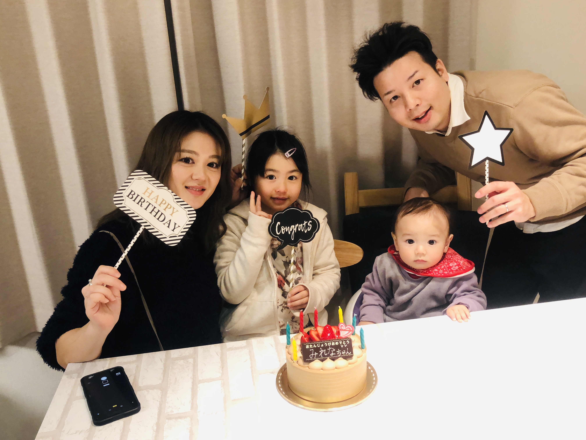

エンジニアの魅力
自分自身が感じた事をモノとして実現させて表現させる事が出来る。
それが自分の為であったり、人の為や、世の中の為になっていく。
生み出せる可能性は無限大だと感じます。人一人のアイディアが形となり世に広まる。
素晴らしいアイディアを形として実現できる。それが、私がエンジニアに感じている魅力です。
今の仕事を通じて感じている事
直近の日本の有効求人倍率は1.57倍と言われており、
”人を採用しづらい時代”から”人が採用できない時代”と言われるまでになりました。
超・売り手市場の世の中です。その中でもエンジニア不足は深刻です。
2019年をピークに減少傾向となり、2020年には更に4.8万人のエンジニア不足、
累計で36.9万人が不足すると経済産業省が推測しています。
一方でIT技術は今後の日本の経済の要になると考えており、
人手不足やエンジニア不足は解決すべき問題だと感じています。
エンジニアになり将来実現したい事
多彩な分野に幅広く対応出来る”マルチエンジニア”になることです。
業務システムの開発・WEBサイト構築・スマートフォンアプリの開発
AIやIoTなどの今後拡大していくIT業界。
『結局何でも出来るエンジニアが強い』私はそう思います。
将来実現したい事は、自身がエンジニアとして豊富な知識と技術を身に着け
地域や各企業に対し価値発揮して貢献出来るエンジニアになる事。
また、私と同じように未経験からエンジニアを目指す人々の育成をして
様々な環境で活躍できるエンジニアの輩出を実現したいと考えています。